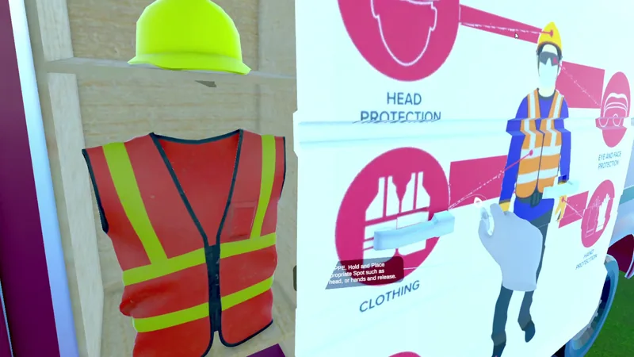
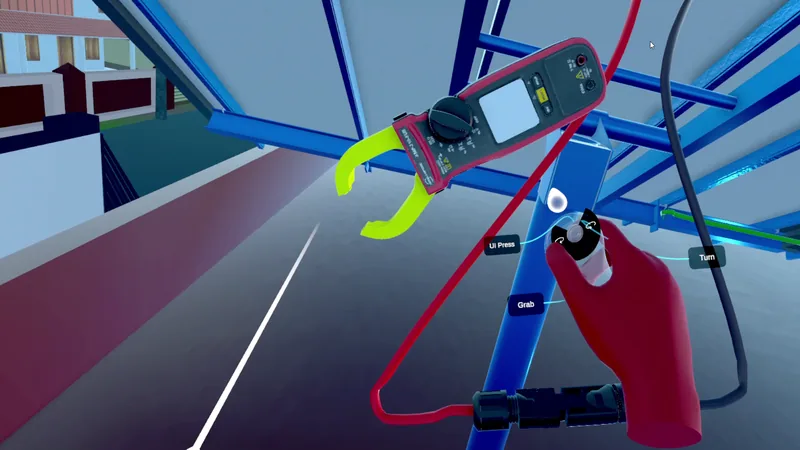
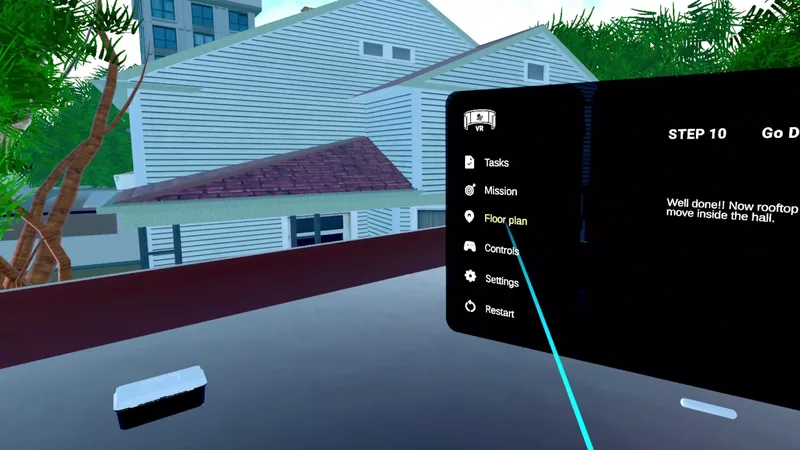
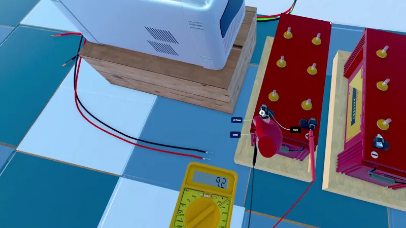
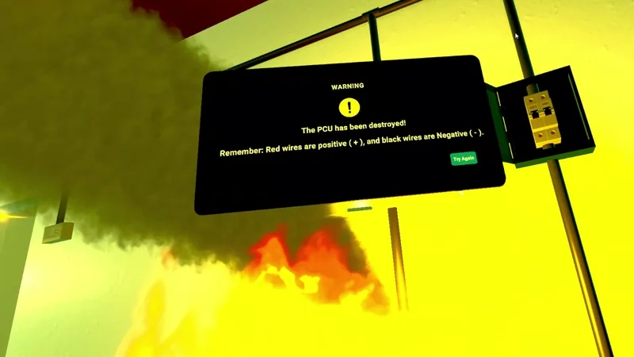

Work Rooftop Solar Connection Simulator
Rooftop Solar Connection Simulator
A narrated VR exercise for wiring a home solar system, from PPE to panels, batteries and the PCU.
What the video shows
87-second VR overview with narration: a service van and mission briefing, picking up PPE, testing rooftop panels with a clamp meter, connecting Y connectors, moving downstairs to a PCU and two batteries, multimeter checks and a series loop cable, then a wrong-polarity connection that destroys the virtual PCU with smoke, flames and a warning to repeat the step.
- My role
- Sole developer.
- Team
- Sole developer
- Organisation
- AMMACHI Labs, Amrita Vishwa Vidyapeetham
- Engine
- Unity 2022.3 LTS · C# and Unity Visual Scripting
- Platform
- VR headset (OpenXR, Quest Touch controllers)
- Built with
Content note: the last part of the video shows a burning-equipment effect with bright, sustained yellow light and some flashing.
The experience
The exercise follows a technician installing a rooftop solar system. A narrator and a step panel lead the way: teleport to the service van, read the safety posters and put on each item of protective equipment by placing it on your body, take the toolbox and go up to the roof. There the learner tests each of three panels with a clamp meter, joins the panels with Y connectors, checks the combined voltage with a multimeter, and runs cables to the DC distribution box. Downstairs, they connect the AC load to the power conditioning unit (PCU), test both 12 V batteries, join them in series for 24 V, wire them to the PCU, switch it on, and finally turn on the house's switches and loads.
Mistakes have consequences. Connecting the battery to the PCU the wrong way round destroys the PCU in smoke and flames, followed by a reminder that red is positive and black is negative. The learner can then restart the step: the moved cable returns to its start position and the PCU is restored. The video ends on this branch to show the feedback.
My work
I was the only developer on the project at AMMACHI Labs. I built the exercise in Unity on top of the XR Interaction Toolkit's starter rig and the lab's shared manager scripts. That includes the sixteen-step Visual Scripting graph and the custom nodes it runs on, the event bus, the snap system for connectors, cables and PPE, the spline-driven cables, the multimeter and clamp-meter logic, the narration and step-panel wiring, and the wrong-connection branch with its retry. The starter rig, packages and imported assets are third-party.
Being the only developer meant owning the whole chain: authoring the steps, making each interaction raise the right event, and debugging the cases where the order a learner does things in doesn't match the order the script expects.
How it works
- Step nodeShows the instruction on the step panel and plays its narration.
- AwaitWaits for one or several named events, such as six PPE items or three panel readings.
- InteractionGrabs, snaps, switches and instrument contacts raise those named events on a small event bus.
- Activate and animateShows or hides objects and plays timelines (the van door, the house opening) before the next step.
A step graph designers can read. The exercise is one Unity Visual Scripting graph: a chain of custom dialog, await and activate-and-animate nodes. Each await node listens for named events, either one or a set, and the event bus remembers events that have already happened, so a learner who does something early isn't blocked waiting for it again.
Snapping things together. Connectors, cable ends, PPE and battery bridges use a snap system. When the right object enters a snap point, it is tweened into place, its grab can be locked, and the snap point raises its event. Snap groups raise a single event once all their members are in place, for example when both panel leads are on the Y connector.
Cables that bend. Wires are skinned meshes laid along splines whose knots follow the grab points at their ends. While a wire is moving it is re-posed every frame; when nothing has moved, it is baked into a static mesh with a collider. That keeps the wire cheap to render and lets it be touched.
Instruments with rules. The multimeter only shows a reading when both probes touch contacts from the same source, with red on positive and black on negative; otherwise it shows an error. The clamp meter's jaw follows the trigger, and closing it around a wire shows that wire's current and counts the panel as tested. Readings are authored per contact point; this is a training model, not an electrical circuit simulation.
Decisions that shaped it
Teach the failure, not just the procedure. Wrong polarity is the mistake with the most expensive real consequence, so it gets its own branch with a visible result, a spoken explanation and a clean retry, rather than a disabled connector.
Narrated steps over free exploration. In VR, reading long text is tiring. Short narrated instructions, a step panel to re-read them, and the next target made visible keep the learner oriented without menus.
Static meshes when still. Most cables spend most of the time untouched, so baking them when they stop moving trades a little memory for much less per-frame work on a standalone headset.
Screens
-

PPE station at the service van. -

Clamp meter held at a panel cable on the rooftop. -

Task tablet with steps, mission and floor plan. -

Testing a battery with a multimeter beside the PCU. -

Failure feedback after wrong-polarity wiring (not task completion).